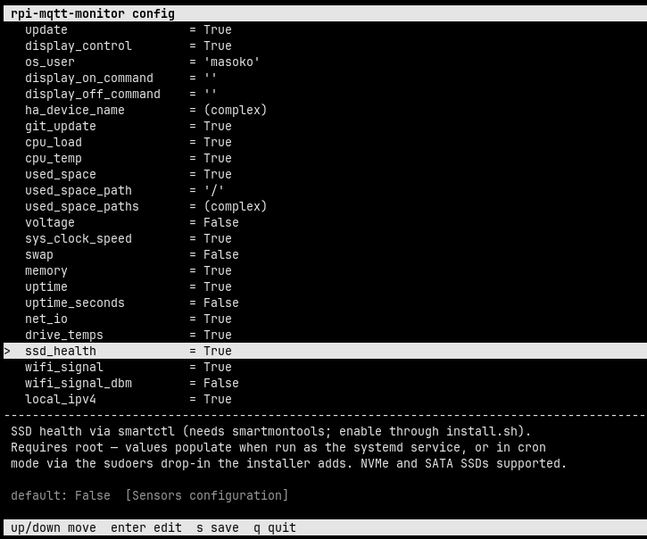

CLI Reference
usage: rpi-mqtt-monitor [-h] [-H] [-d] [-s] [-v] [-u] [-w] [-c] [--uninstall]
Monitor CPU load, temperature, frequency, free space, etc., and publish the
data to an MQTT server or Home Assistant API.
options:
-h, --help show this help message and exit
-H, --hass_api send readings via Home Assistant API (not via MQTT)
-d, --display display values on screen
-s, --service run as a service; sleep interval set in config.py
-v, --version display installed version and exit
-u, --update update script and config then exit
-w, --hass_wake display Home Assistant wake-on-LAN configuration
-c, --config open the interactive TUI configurator and exit
--uninstall uninstall rpi-mqtt-monitor and remove all related filesOptions at a glance
| Flag | Description |
|---|---|
-h, --help | Show the help message and exit |
-H, --hass_api | Send readings via the Home Assistant API (not via MQTT) |
-d, --display | Display values on screen |
-s, --service | Run as a service; sleep interval set in config.py |
-v, --version | Display installed version and exit |
-u, --update | Update script and config then exit |
-w, --hass_wake | Display Home Assistant wake-on-LAN configuration |
-c, --config | Open the interactive TUI configurator (navigate with arrows, edit, save) and exit |
--uninstall | Uninstall rpi-mqtt-monitor and remove all related files |
Interactive configurator
Run rpi-mqtt-monitor --config to open a terminal UI for editing config.py.
Move through the settings with the ↑/↓ arrows; each setting shows its description and
default value. Press Enter to edit the selected value, s to save,
and q to quit. Comments, ordering, and formatting in config.py are preserved.
